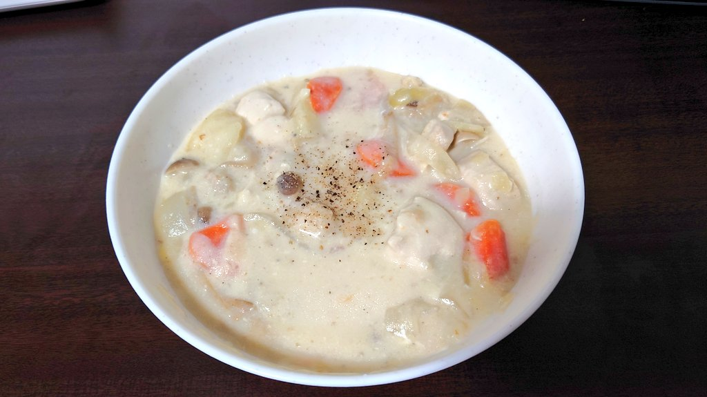
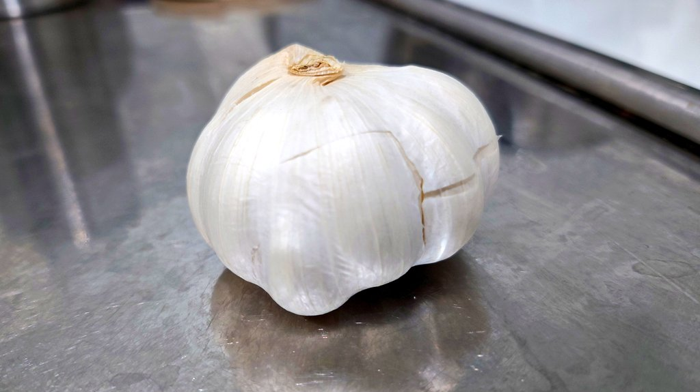

こんにちは、ザクザク食感です。
昨日のスペースにて
ザクザク食感「結局カレーが一番コスパいいからまたカレー生活に戻っちゃうな……でもさすがに飽きたわ」
フォロワー「カレーに飽きたならシチューとかつくればいいんじゃない？」
ちょっと待って……
天才？？？？？？？？？？？？？？？？？？？？？？？
善政のマリーアントワネットですかい！？？！？！？！！！？！？！？！？
そうと決まればやるしかない！
やった！！！

美味しい！！！
けどシチューにしては妙にご飯が進むな……
っておい これ……
シュクメルリじゃねぇか！！！！！！！！！！

↑これの半分入れた
すでにカレー用に材料買ってて無駄にしたくなかったからにんにく入れたけど、成立してよかったね……
これで作り置きのバリエーション増えました！ありがとうフォロワー！！！
次は「転生したら肉じゃがだった件」でお会いしましょう！
それでは、さようなら。